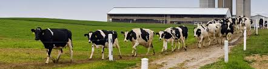
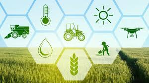

Dairy Community Hub
Welcome to our Dairy Community! This is the place for farmers, dairy owners, and customers to connect, share tips, post events, and discuss dairy-related news.

Farmer Meetups
Join monthly gatherings to exchange knowledge and farming techniques.

Milk Quality Workshops
Learn how to improve milk production and quality standards.

Dairy Technology
Discover the latest tools and equipment for modern dairy farming.
Upcoming Events
| Event Name | Date | Location | Contact |
|---|---|---|---|
| Nashik Farmers Meet | 20 Aug 2025 | Nashik Agriculture Hall | +91 93709 53443 |
| Dairy Equipment Expo | 10 Sep 2025 | City Expo Center, Nashik | +91 80109 00630 |
| Milk Quality Testing Camp | 5 Oct 2025 | Shree Krushna Dairy, Nashik | +91 98909 73336 |